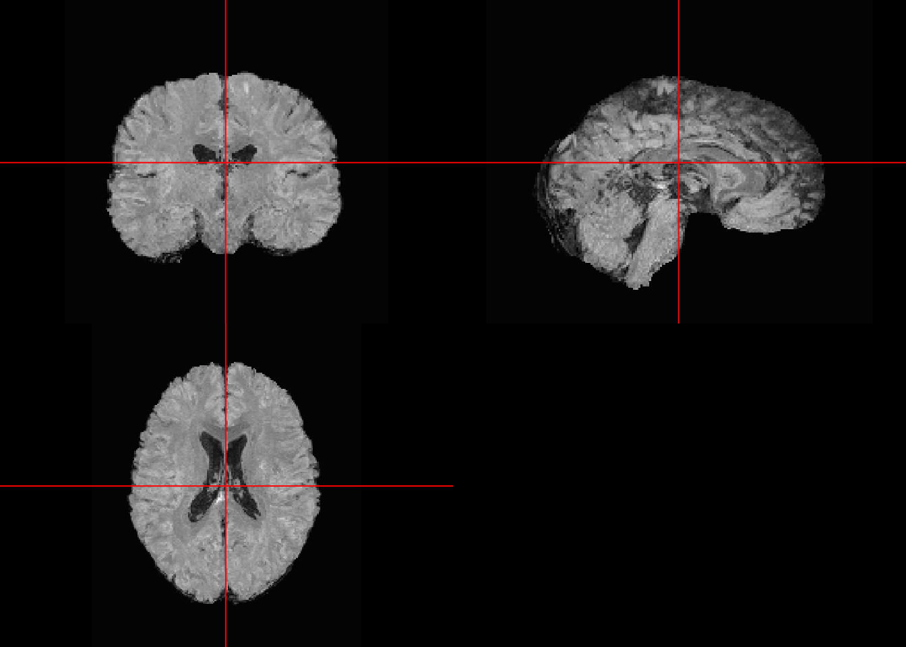
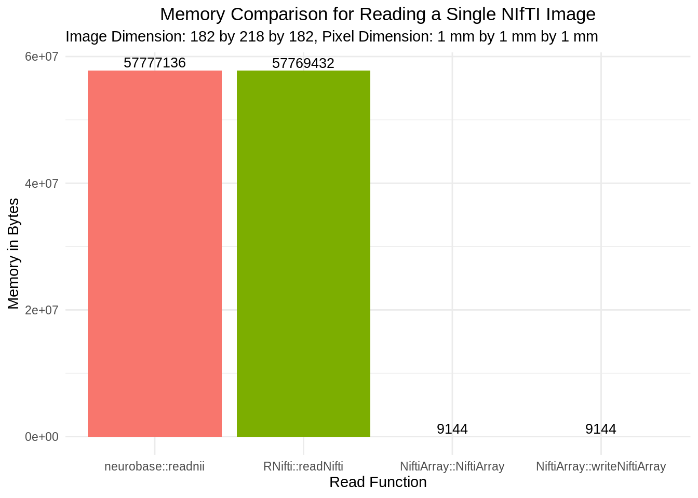
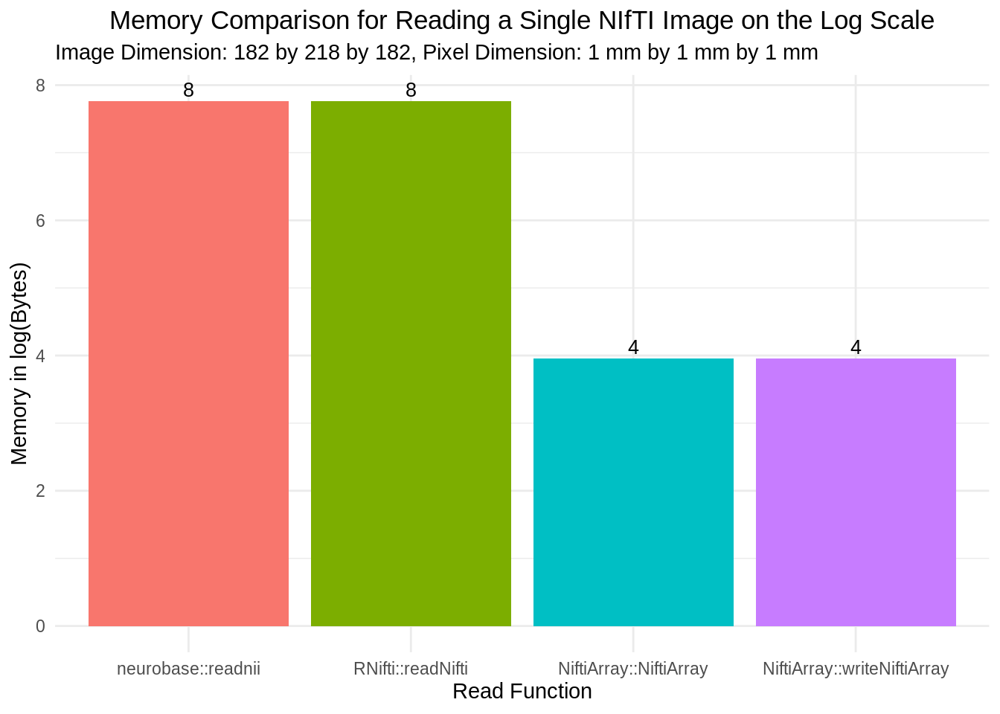
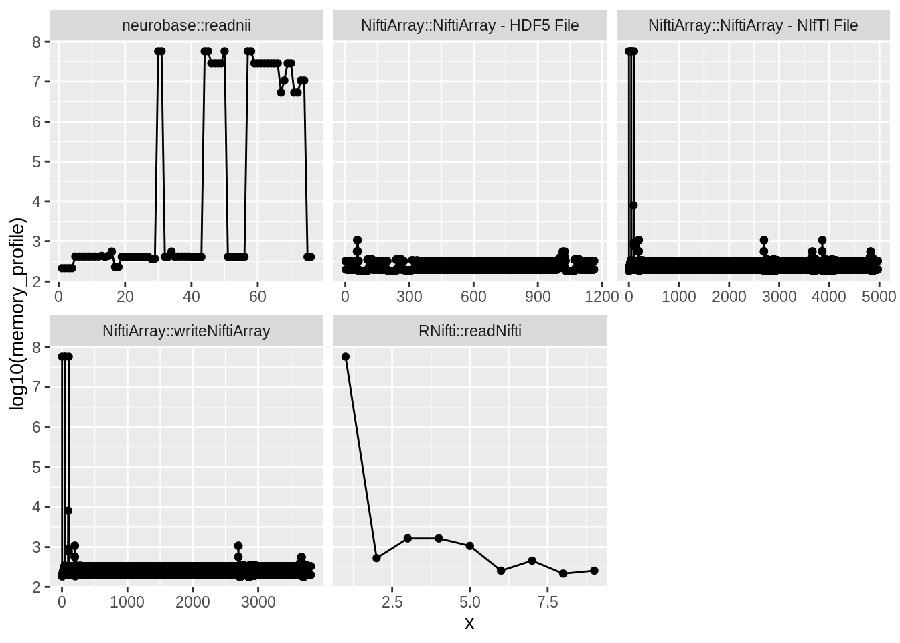
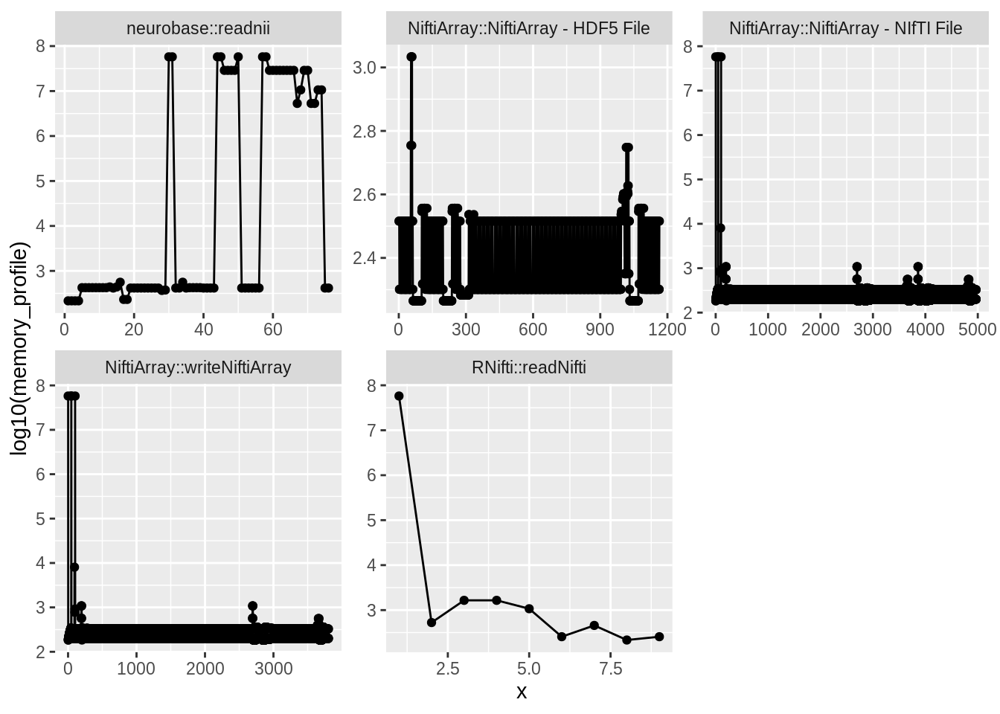
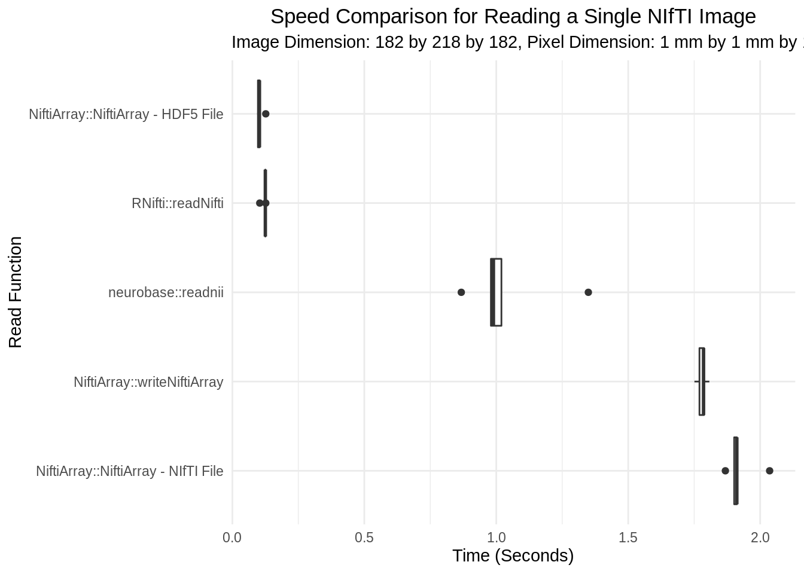

vignettes/niftiarray-vignette.Rmd
niftiarray-vignette.RmdThis page is still under construction! Check back later for updates!
R is not well suited for big data sets. NIfTI images, depending on the image dimension and voxel size, can be quite large when loaded and memory is a concern. As sample size or number of scans increases it becomes difficult to perform simple operations voxel-wise across subjects. For example, calculating the mean image across 800 subjects is computationally intense since not all 800 subjects can be loaded into memory at once. Therefore, there is a need for alternative approaches.
The NiftiArray package allows for fast random access of imaging data in NIfTI format and supports DelayedArray operations. The package establishes the NiftiArray class, a convenient and memory-efficient array-like container for on-disk representation of NIfTI image(s). The NiftiArray class is an extension of the HDF5Array class and converts NIfTI objects on disk to HDF5 files which allow for block processing and memory-efficient representations in R.
NiftiArray is compatible with the DelayedArray and DelayedMatrixStats packages.
DelayedArray is an R package currently hosted on Bioconductor. DelayedArray allows common array operations on an object without loading it into memory. In order to reduce memory usage and optimize performance, operations on the object are either delayed or executed using a block processing mechanism. DelayedArray works with the NiftiArray class to delay computation and allow fast and efficient data access.
DelayedMatrixStats is an R package currently hosted on Bioconductor. DelayedMatrixStats contains functions for statistical calculations (i.e. row or column median calculation) using DelayedArray efficient block processing on large matrices while keeping local memory usage low. DelayedMatrixStats builds on both the DelayedArray and matrixStats packages to allow for high-performing functions operating on rows and columns of DelayedMatrix objects. The functions are optimized by data type and for subsetted calculations such that both memory usage and processing time is minimized.
You can install the development version of NiftiArray from GitHub using the following:
# install.packages('remotes') remotes::install_github("muschellij2/NiftiArray")
We are working to get a stable version on Neuroconductor.
The packages you will need to load for use with this tutorial are below:
library(DelayedArray) library(DelayedMatrixStats) library(dplyr) library(forcats) library(ggplot2) library(gridExtra) library(kableExtra) library(knitr) library(microbenchmark) library(RNifti) library(NiftiArray) library(neurobase) library(pbapply) library(profmem) library(remotes) library(stringr) library(tibble) library(tidyr) nifti_header = NiftiArray::nifti_header
This tutorial will use data found here. A description of the data is available here. In this tutorial we will use the FLAIR images for subjects 1-5. We will download the data to a temporary folder. If you prefer to load these to a specific directory feel free to change the nii_destination in fileinfo to the file path where you’d like to save each image.
# Information about URL to download and where to save the image locally in destiation urls = file.path("https://raw.githubusercontent.com", "muschellij2", "open_ms_data", "master", "cross_sectional", "MNI", paste0("patient0", 1:5), "FLAIR_N4_noneck_reduced_winsor_regtoFLAIR_brain_N4_regtoMNI.nii.gz") nii_destinations = sapply(urls, function(x) tempfile(fileext = ".nii.gz")) hdf5_destinations = sub(".nii.gz", ".h5", nii_destinations) fileinfo = tibble::tibble(url = urls, nii_destination = nii_destinations, hdf5_destination = hdf5_destinations) # Download all the files to the nii_destination mapply(function(x,y) { download.file(url = x, destfile = y) }, fileinfo$url, fileinfo$nii_destination) #> https://raw.githubusercontent.com/muschellij2/open_ms_data/master/cross_sectional/MNI/patient01/FLAIR_N4_noneck_reduced_winsor_regtoFLAIR_brain_N4_regtoMNI.nii.gz #> 0 #> https://raw.githubusercontent.com/muschellij2/open_ms_data/master/cross_sectional/MNI/patient02/FLAIR_N4_noneck_reduced_winsor_regtoFLAIR_brain_N4_regtoMNI.nii.gz #> 0 #> https://raw.githubusercontent.com/muschellij2/open_ms_data/master/cross_sectional/MNI/patient03/FLAIR_N4_noneck_reduced_winsor_regtoFLAIR_brain_N4_regtoMNI.nii.gz #> 0 #> https://raw.githubusercontent.com/muschellij2/open_ms_data/master/cross_sectional/MNI/patient04/FLAIR_N4_noneck_reduced_winsor_regtoFLAIR_brain_N4_regtoMNI.nii.gz #> 0 #> https://raw.githubusercontent.com/muschellij2/open_ms_data/master/cross_sectional/MNI/patient05/FLAIR_N4_noneck_reduced_winsor_regtoFLAIR_brain_N4_regtoMNI.nii.gz #> 0 # Notice the files were saved to a temporary directory on your machine # Change tempdir() to the directory where you saved the files if you adapted nii_destination list.files(tempdir(), full.names = TRUE) #> [1] "/tmp/RtmpRROiCN/file442150527a66.so" #> [2] "/tmp/RtmpRROiCN/file442153fd091e.nii.gz" #> [3] "/tmp/RtmpRROiCN/file442154eee61a.nii.gz" #> [4] "/tmp/RtmpRROiCN/file44216d0ceaf6.nii.gz" #> [5] "/tmp/RtmpRROiCN/file442171599c46.nii.gz" #> [6] "/tmp/RtmpRROiCN/file4421dd9c080.nii.gz" #> [7] "/tmp/RtmpRROiCN/HDF5Array_dataset_creation_global_counter" #> [8] "/tmp/RtmpRROiCN/HDF5Array_dump" #> [9] "/tmp/RtmpRROiCN/HDF5Array_dump_files_global_counter" #> [10] "/tmp/RtmpRROiCN/HDF5Array_dump_log" #> [11] "/tmp/RtmpRROiCN/HDF5Array_dump_names_global_counter"
These data are \(182 \times 218 \times 182\) with pixel dimension \(1 mm \times 1mm \times 1 mm\). On disk they take up approximately 5MB as nii.gz compressed objects. When loaded into R, each image consumes approximately 55 MB worth of memory.
Obviously, imaging data can be smaller or larger in memory depending on dimension and pixel size but naturally all imaging data will run into memory restrictions. NiftiArray attempts to overcome these problems by converting NIfTI objects to HDF5 files, an efficient random access data type on disk. NiftiArray conserves the array structure and NIfTI header. Therefore, interacting with NiftiArray objects in R is similar to regular NIfTI objects. The benefit here is the images remain on disk and are not ever fully loaded so memory is conserved. See Comparison of NiftiArray to Traditional Methods section for memory comparisons.
NiftiArray
In the Data section we downloaded data for this tutorial into a temporary directory and recorded the file paths in which they were saved. These files are .nii.gz file types. Unfortunately, these NIfTI compressed images cannot be fast random accessed. In order to utilize the NiftiArray functionality these data must be converted to HDF5 files on disk. This will not affect how you interact with the object in R only how it is stored on disk. Unfortunately, saving this objects out as HDF5 objects will require the same amount of memory on disk so if you keep the NIfTI images on disk as well as the HDF5 files you will double your memory usage on disk. In R though, these objects will use almost no memory. This is where NiftiArray shines.
NiftiArray::writeNiftiArray
To convert a NIfTI object to an HDF5 file and eventually a local NiftiArray object you can use the NiftiArray::writeNiftiArray function. By default this function will store the data in a temporary folder, similar to where we saved the data for this tutorial. You can over-ride this though by specifying the filepath option.
Note: When calling NiftiArray::writeNiftiArray you are converting the NIfTI object on disk to a HDF5 file with a NIfTI-specific grouping or hierarchical format. See this link for more information on groups within HDF5 files. In the event that users have stored other information in groups inside the HDF5 file output from NiftiArray::writeNiftiArray we did not want to support over-writing the file and therefore additional information. Instead, we simply over-write the groups that are associated with a NiftiArray object inside the HDF5 file. To over-write these groups, set overwrite = TRUE in the NiftiArray::writeNiftiArray function.
Let’s convert and write the first subject’s data as a temporary file to the temporary directory on-disk. This temporary file will have the pattern NiftiArraypatient01 in the file name. Again, if you’d like to save this object somewhere other than the temporary directory simply change the filepath option in NiftiArray::writeNiftiArray.
# Write the NiftiArray object to disk and load it into R as patient01 patient01 = NiftiArray::writeNiftiArray( fileinfo$nii_destination[1], filepath = fileinfo$hdf5_destination[1], overwrite = TRUE) file.exists(fileinfo$hdf5_destination[1]) #> [1] TRUE
The NIfTI was converted to the the NIfTI-HDF5 file format and saved on disk. It was also loaded into memory is a NiftiArray object and returned in R as patient01. patient01 is of class NiftiArray.
class(patient01) #> [1] "NiftiArray" #> attr(,"package") #> [1] "NiftiArray"
The NIfTI header is conserved in the NiftiArray class in case you ever need to quality control or convert a NiftiArray back to a NIfTI image. You can extract the header information from a NiftiArray object using the NiftiArray::nifti_header function.
# Print the NIfTI header associated with patient01 NiftiArray::nifti_header(patient01) #> NIfTI-1 header #> sizeof_hdr: 348 #> dim_info: 0 #> dim: 3 182 218 182 1 1 1 1 #> intent_p1: 0 #> intent_p2: 0 #> intent_p3: 0 #> intent_code: 0 #> datatype: 64 #> bitpix: 64 #> slice_start: 0 #> pixdim: -1 1 1 1 0 0 0 0 #> vox_offset: 352 #> scl_slope: 0 #> scl_inter: 0 #> slice_end: 0 #> slice_code: 0 #> xyzt_units: 2 #> cal_max: 225.6973 #> cal_min: -29.19629 #> slice_duration: 0 #> toffset: 0 #> descrip: #> aux_file: #> qform_code: 1 #> sform_code: 0 #> quatern_b: 0 #> quatern_c: 1 #> quatern_d: 0 #> qoffset_x: 90 #> qoffset_y: -126 #> qoffset_z: -72 #> srow_x: 0 0 0 0 #> srow_y: 0 0 0 0 #> srow_z: 0 0 0 0 #> intent_name: #> magic: n+1 #> extendible: FALSE
In the next section we will re-load patient01 using the NiftiArray::NiftiArray function. Let’s remove the patient01 object from R memory so we can re-load it later.
# Remove patient01 object from R memory so it can be re-loaded later rm(patient01)
The NiftiArray::writeNiftiArray function takes a single file path and converts the NIfTI image on disk to the HDF5 file on disk while also loading the NiftiArray into local memory. By default, the images are saved to a temporary directory. This is useful for quick one time calculations or conversions and ensures that on-disk storage remains minimal since the temporary directories delete the files systematically over time.
When you want to work with NiftiArray objects for lots of subjects frequently though the conversion process may take some valuable compute time and memory. Instead, in these instances if on-disk storage is not an issue we suggest saving the HDF5 NiftiArray objects to their own folder and loading NiftiArray into R using NiftiArray::NiftiArray. For only a few images compute time for both approaches (NiftiArray::writeNiftiArray and NiftiArray::NiftiArray) are fast and comparable but for larger data sets of reasonable dimension and pixel size it can take a few minutes to convert and save the HDF5 object and a few minutes to load into R locally. See the Compute Time section for more details about differences in compute time between NiftiArray::writeNiftiArray and NiftiArray::NiftiArray.
NiftiArray::NiftiArray
The NiftiArray function can be used to load an on disk NIfTI object into R as a NiftiArray.
# Reload patient01 using NiftiArray::NiftiArray from a NIfTI object on disk patient01 = NiftiArray::NiftiArray(fileinfo$nii_destination[1]) # Remove patient01 object from R memory so it can be re-loaded later rm(patient01)
It can also load the NiftiArray object from the HDF5 file converted using NiftiArray::writeNiftiArray object on-disk and stored as a HDF5 it can be loaded into R using the NiftiArray::NiftiArray function.
# Reload patient01 using NiftiArray::NiftiArray from a HDF5 object on disk patient01 = NiftiArray::NiftiArray(fileinfo$hdf5_destination[1])
Notice this is exactly the same patient01 object as before.
NiftiArray ObjectsThough a NiftiArray object you’ll interact with R and the NiftiArray as you would a normal image.
# TODO explain subsetting and loading into memory # drop = FALSE - https://github.com/Bioconductor/DelayedArray/issues/6 # Index a single voxel patient01[90, 89, 101] #> [1] 68.99766 # Change the value of the background voxels from 0 to -100 ## Note: Normally this should be done using a brain mask but this is just an example for this tutorial patient01[patient01 == 0] = -100 # Summary stats min(patient01) #> [1] -100 max(patient01) #> [1] 225.6973 # Image operations patient_sum = patient01 + patient01 # Notice it did sum the NiftiArray objects voxel-wise across objects patient_sum[90, 89, 101] #> [1] 137.9953
Due to the block processing some functionality will not be available.
# Due to the block calculation some base functions will not be available # The table function errors # TODO: Does DelayedArray have a table? DelayedArray::table() # table(patient01) table(c(patient01 > 5)) #> #> FALSE TRUE #> 5927729 1293303
# Remove patient01 object from R memory so it can be re-loaded later rm(patient01)
NiftiArray ObjectsIn practice we have a list of subjects we want to convert from NIfTIs to NiftiArray objects and load into R.
mapply NiftiArray::writeNiftiArray
To write out multiple NIfTI images on disk to the required HDF5 files we can simply mapply over NiftiArray::writeNiftiArray.
# Write out the entire filepath of NIfTI objects to HDF5s all_patients_list = mapply(function(x,y) { writeNiftiArray(x = x, filepath = y, overwrite = TRUE) }, fileinfo$nii_destination, fileinfo$hdf5_destination) # List the files in the temporary directory -- all subjects should be there as NIfTIs and .h5s list.files(tempdir(), pattern = ".(nii|h5)") #> [1] "file442147628f09.h5" "file442153fd091e.h5" #> [3] "file442153fd091e.nii.gz" "file442154eee61a.h5" #> [5] "file442154eee61a.nii.gz" "file44216d0ceaf6.h5" #> [7] "file44216d0ceaf6.nii.gz" "file442171599c46.h5" #> [9] "file442171599c46.nii.gz" "file4421dd9c080.h5" #> [11] "file4421dd9c080.nii.gz" # Remove all_patients_list since we will load it in a different way later rm(all_patients_list)
NiftiArray::NiftiArrayList
The NiftiArray::NiftiArrayList function converts and writes NiftiArray objects if the x input is of class NIfTI and then loads all the NiftiArray objects into R in a list as a new class NiftiArrayList. That is, every element in the list is a NiftiArray.
# Convert, write to temporary disk, and load all_patients_list using NiftiArray::NiftiArrayList all_patients_list = NiftiArray::NiftiArrayList(fileinfo$nii_destination) # Show the class is NiftiArrayList class(all_patients_list) #> [1] "NiftiArrayList"
The NiftiArray::NiftiArrayList class also simply loads the NiftiArray objects as a list if the x input is a set of file paths to the HDF5 NiftiArray files on disk.
# Load all_patients_list using NiftiArray::NiftiArrayList all_patients_list = NiftiArray::NiftiArrayList(fileinfo$hdf5_destination) # Show the class is NiftiArrayList class(all_patients_list) #> [1] "NiftiArrayList"
At this point, we have all 5 patients loaded into R as a NiftiArrayList object. We can now convert the NiftiArray object to a NiftiMatrix object in order to run voxel-wise calculations.
NiftiArray to a NiftiMatrix
The NiftiArray object is a 3 dimensional array structure that allows for memory efficient delayed random access of NIfTI objects. The NiftiMatrix is the result of concatenating the NiftiArray. Similar to NiftiArray, NiftiMatrix is a new class object. Rather than an array structure we can strung out the image to a vector. In the code below, we convert a NiftiArray to a NiftiMatrix for one patient. We then verify that the class of this object is in fact a NiftiMatrix, has only a single column, index the vector to print some values, and validate that the object size is as memory efficient as the NiftiMatrix.
# Reload patient01 using NiftiArray::NiftiArray from a HDF5 object on disk patient01 = NiftiArray::NiftiArray(fileinfo$hdf5_destination[[1]]) # Convert the NiftiArray to a NiftiMatrix patient01_niimat = as(patient01, "NiftiMatrix") # Verify patient01_niimat is of class NiftiMatrix class(patient01_niimat) #> [1] "ReshapedNiftiMatrix" #> attr(,"package") #> [1] "NiftiArray" # Notice the NiftiMatrix has only 1 column dim(patient01_niimat) #> [1] 7221032 1 # Index the NiftiMatrix like a vector patient01_niimat[40000:40010] #> [1] 0 0 0 0 0 0 0 0 0 0 0 # The NiftiMatrix object is still memory efficient object.size(patient01_niimat) #> 9512 bytes # Obtain the NIfTI header NiftiArray::nifti_header(patient01_niimat) #> NIfTI-1 header #> sizeof_hdr: 348 #> dim_info: 0 #> dim: 3 182 218 182 1 1 1 1 #> intent_p1: 0 #> intent_p2: 0 #> intent_p3: 0 #> intent_code: 0 #> datatype: 64 #> bitpix: 64 #> slice_start: 0 #> pixdim: -1 1 1 1 0 0 0 0 #> vox_offset: 352 #> scl_slope: 0 #> scl_inter: 0 #> slice_end: 0 #> slice_code: 0 #> xyzt_units: 2 #> cal_max: 225.6973 #> cal_min: -29.19629 #> slice_duration: 0 #> toffset: 0 #> descrip: #> aux_file: #> qform_code: 1 #> sform_code: 0 #> quatern_b: 0 #> quatern_c: 1 #> quatern_d: 0 #> qoffset_x: 90 #> qoffset_y: -126 #> qoffset_z: -72 #> srow_x: 0 0 0 0 #> srow_y: 0 0 0 0 #> srow_z: 0 0 0 0 #> intent_name: #> magic: n+1 #> extendible: FALSE
In this example, we showed the result of converting a single patients NiftiArray to a NiftiMatrix but it will be more useful to create a NiftiMatrix with multiple subjects.
NiftiArrayList to a Big NiftiMatrix
In order to use tools like DelayedArray and DelayedMatrixStats to calculate voxel-level statistics across multiple subjects we need to create a big NiftiMatrix. That is, each row will represent a voxel and each column a new subject. To do this, we can take advantage of the NiftiArrayList class.
# Show all_patients_list is of NiftiArrayList class(all_patients_list) #> [1] "NiftiArrayList" # Convert each element in the list to a NiftiMatrix all_patients_niimat = pbapply::pblapply(all_patients_list, as, "NiftiMatrix") # Concatenate the list elements column-wise all_patients_niimat = do.call(DelayedArray::acbind, all_patients_niimat) # Show the matrix head(all_patients_niimat) #> <6 x 5> matrix of class DelayedMatrix and type "double": #> [,1] [,2] [,3] [,4] [,5] #> [1,] 0 0 0 0 0 #> [2,] 0 0 0 0 0 #> [3,] 0 0 0 0 0 #> [4,] 0 0 0 0 0 #> [5,] 0 0 0 0 0 #> [6,] 0 0 0 0 0 # Notice the dimension is all the voxels in the brain by the 5 patients we are working with dim(all_patients_niimat) #> [1] 7221032 5 # Obtain the NIfTI header NiftiArray::nifti_header(all_patients_niimat) #> NIfTI-1 header #> sizeof_hdr: 348 #> dim_info: 0 #> dim: 3 182 218 182 1 1 1 1 #> intent_p1: 0 #> intent_p2: 0 #> intent_p3: 0 #> intent_code: 0 #> datatype: 64 #> bitpix: 64 #> slice_start: 0 #> pixdim: -1 1 1 1 0 0 0 0 #> vox_offset: 352 #> scl_slope: 0 #> scl_inter: 0 #> slice_end: 0 #> slice_code: 0 #> xyzt_units: 2 #> cal_max: 229.2717 #> cal_min: -21.56378 #> slice_duration: 0 #> toffset: 0 #> descrip: #> aux_file: #> qform_code: 1 #> sform_code: 0 #> quatern_b: 0 #> quatern_c: 1 #> quatern_d: 0 #> qoffset_x: 90 #> qoffset_y: -126 #> qoffset_z: -72 #> srow_x: 0 0 0 0 #> srow_y: 0 0 0 0 #> srow_z: 0 0 0 0 #> intent_name: #> magic: n+1 #> extendible: FALSE
DelayedMatrixStats
The DelayedMatrixStats package allows for row or column wise statistical operations using delayed block processing to keep both memory and speed optimized. For more information, the package and documentation is available through Bioconductor here.
Below we show a simple example obtaining the voxel level mean and median across subjects.
all_patients_niimat = as(all_patients_niimat, "HDF5Matrix") # Calculate the voxel-wise median across subjects voxel_medians = DelayedMatrixStats::rowMedians(all_patients_niimat) # Index the median vector voxel_medians[1043001] #> [1] 0 # Show the class of voxel_medians class(voxel_medians) #> [1] "numeric" # Calculate the object size object.size(voxel_medians) #> 57768304 bytes
Notice the resulting vector voxel_medians is not a DelayedArray or NiftiArray object but rather a normal vector. We can convert it to a NiftiMatrix so that it returns to a memory efficient object using as.
# Convert the median vector back to a `NiftiMatrix` voxel_medians = as(voxel_medians, 'NiftiMatrix') # Notice the size is back to a memory efficient value object.size(voxel_medians) #> 9128 bytes # The header is no longer accurate though NiftiArray::nifti_header(voxel_medians) #> NIfTI-1 header #> sizeof_hdr: 348 #> dim_info: 0 #> dim: 1 12072 1 1 1 1 1 1 #> intent_p1: 0 #> intent_p2: 0 #> intent_p3: 0 #> intent_code: 0 #> datatype: 64 #> bitpix: 64 #> slice_start: 0 #> pixdim: 0 1 1 0 0 0 0 0 #> vox_offset: 348 #> scl_slope: 0 #> scl_inter: 0 #> slice_end: 0 #> slice_code: 0 #> xyzt_units: 0 #> cal_max: 0 #> cal_min: 0 #> slice_duration: 0 #> toffset: 0 #> descrip: #> aux_file: #> qform_code: 0 #> sform_code: 0 #> quatern_b: 0 #> quatern_c: 0 #> quatern_d: 0 #> qoffset_x: 0 #> qoffset_y: 0 #> qoffset_z: 0 #> srow_x: 0 0 0 0 #> srow_y: 0 0 0 0 #> srow_z: 0 0 0 0 #> intent_name: #> magic: n+1 #> extendible: FALSE
Notice the NIfTI header is no longer accurate when we coerce the normal vector to a NiftiMatrix.
# Calculate the voxel-wise mean across subjects voxel_means = DelayedMatrixStats::rowMeans2(all_patients_niimat)
DelayedMatrixStats is a very powerful package so you should spend some time looking through the functions and documentation to see what is available and useful for you.
NiftiMatrix, NiftiArray, and NiftiImage ClassesSo long as the object belongs to the classes available in NiftiArray (i.e. NiftiArray, NiftiMatrix) we can easily convert between the classes and back to a niftiImage class exported from RNifti. It is easy to convert between these object because the NIfTI header is retained among all the objects.
DelayedMatrixStats and Vectors to NiftiArray
Converting between the objects returned from DelayedMatrixStats functions and NiftiArray objects is not as easy because the NIfTI header was lost in the calculations involved in DelayedMatrixStats functions. We must extract the header from previous object and then re-initialize the NiftiArray.
# Median # Obtain the image header associated with the all_patients_list NiftiArrayList image_header = NiftiArray::nifti_header(all_patients_list) # Initialize an array median_arr = array(voxel_medians, dim = image_header$dim[2:4]) # The object size of median_arr is normal because it is a normal array object.size(median_arr) #> 57768480 bytes # Convert the array to a NiftiArray and write it out to a temporary file median_niiarr = NiftiArray::writeNiftiArray(median_arr, header = image_header) # The object size is back to our efficient NiftiArray object.size(median_niiarr) #> 9144 bytes # Mean # Obtain the image header associated with the all_patients_list NiftiArrayList image_header = NiftiArray::nifti_header(all_patients_list) # Initialize an array mean_arr = array(voxel_means, dim = image_header$dim[2:4]) # The object size of mean_arr is normal because it is a normal array object.size(mean_arr) #> 57768480 bytes # Convert the array to a NiftiArray and write it out to a temporary file mean_niiarr = NiftiArray::writeNiftiArray(mean_arr, header = image_header) # The object size is back to our efficient NiftiArray object.size(mean_niiarr) #> 9144 bytes
Once a NiftiArray it is easy to create the niftiImage object.
median_nii = as(median_niiarr, "niftiImage") mean_nii = as(mean_niiarr, "niftiImage")
neurobase::ortho2(median_nii, pdim = nifti_header(median_nii)$pixdim)

neurobase::ortho2(mean_nii, pdim = nifti_header(mean_nii)$pixdim)
You could write these objects out as NIfTIs using RNifti::writeNifti
NiftiArray to Traditional Methods# Calculate the a single patient object size using different NIfTI read functions memory = tibble::tibble(read_type = c('NiftiArray::NiftiArray', 'NiftiArray::writeNiftiArray', 'RNifti::readNifti', 'neurobase::readnii'), byte_size = c(object.size(NiftiArray::NiftiArray(fileinfo$nii_destination[1])), object.size(NiftiArray::writeNiftiArray(fileinfo$nii_destination[1])), object.size(RNifti::readNifti(fileinfo$nii_destination[1])), object.size(neurobase::readnii(fileinfo$nii_destination[1]))), log_byte_size = log10(byte_size)) %>% dplyr::mutate(read_type = as.factor(read_type), read_type = forcats::fct_reorder(read_type, byte_size, .desc = TRUE)) # Table of memory knitr::kable( memory, col.names = c('Read Function', 'Byte Size', 'log_10(Byte Size)'), format = 'html', digits = 2, caption = 'Memory mapped in bytes from a single patients image read. The image dimension is 182 by 218 by 182 with pixel dimension 1 mm by 1 mm by 1 mm. On disk the image is 4.9 MB.', booktabs = TRUE ) %>% kableExtra::kable_styling("striped", full_width = FALSE)
| Read Function | Byte Size | log_10(Byte Size) |
|---|---|---|
| NiftiArray::NiftiArray | 9144 | 3.96 |
| NiftiArray::writeNiftiArray | 9144 | 3.96 |
| RNifti::readNifti | 57769432 | 7.76 |
| neurobase::readnii | 57777136 | 7.76 |
# Bar graph in bytes ggplot(memory, aes(x = read_type, y = byte_size, fill = read_type)) + geom_bar(stat="identity") + geom_text(aes(label=byte_size), vjust=-0.3, size=3.5) + ylab('Memory in Bytes') + xlab('Read Function') + labs(title = 'Memory Comparison for Reading a Single NIfTI Image', subtitle = 'Image Dimension: 182 by 218 by 182, Pixel Dimension: 1 mm by 1 mm by 1 mm') + theme_minimal() + theme(plot.title = element_text(hjust=0.5), legend.position = 'none')

# Bar graph in log(bytes) ggplot(memory, aes(x = read_type, y = log_byte_size, fill = read_type)) + geom_bar(stat="identity") + geom_text(aes(label=round(log_byte_size), digits = 2), vjust=-0.3, size=3.5) + ylab('Memory in log(Bytes)') + xlab('Read Function') + labs(title = 'Memory Comparison for Reading a Single NIfTI Image on the Log Scale', subtitle = 'Image Dimension: 182 by 218 by 182, Pixel Dimension: 1 mm by 1 mm by 1 mm') + theme_minimal() + theme(plot.title = element_text(hjust=0.5), legend.position = 'none') #> Warning: Ignoring unknown aesthetics: digits

# Initalize a list to store the memory profile memory_profile = list() # Memory profile of RNifti::readNifti() memory_profile[[1]] = tibble::tibble(read_type = 'RNifti::readNifti', memory_profile = profmem::profmem(RNifti::readNifti(fileinfo$nii_destination[1]))$bytes) memory_profile[[2]] = tibble::tibble(read_type = 'neurobase::readnii', memory_profile = profmem::profmem(neurobase::readnii(fileinfo$nii_destination[1]))$bytes) memory_profile[[3]] = tibble::tibble(read_type = 'NiftiArray::NiftiArray - NIfTI File', memory_profile = profmem::profmem(NiftiArray::NiftiArray(fileinfo$nii_destination[1]))$bytes) memory_profile[[4]] = tibble::tibble(read_type = 'NiftiArray::writeNiftiArray', memory_profile = profmem::profmem(NiftiArray::writeNiftiArray(fileinfo$nii_destination[1]))$bytes) memory_profile[[5]] = tibble::tibble(read_type = 'NiftiArray::NiftiArray - HDF5 File', memory_profile = profmem::profmem(NiftiArray::NiftiArray(fileinfo$hdf5_destination[1]))$bytes) memory_profile = dplyr::bind_rows(memory_profile) %>% tidyr::drop_na() %>% dplyr::group_by(read_type) %>% dplyr::mutate(x = dplyr::row_number())
ggplot(data=memory_profile, aes(x=x, y=log10(memory_profile))) + geom_line()+ geom_point() + facet_wrap(~read_type, scales = "free_x")

ggplot(data=memory_profile, aes(x=x, y=log10(memory_profile))) + geom_line()+ geom_point() + facet_wrap(~read_type, scales = "free")

Speed is very important. Obviously, we want code to be speed efficient to save overall computation time but as a user we also don’t want to be distracted by time lags. 0.1 second is approximately the limit for a user to feel as though the system is reacting instantaneously. 1.0 second is about the limit for the user’s flow or thought process to stay uninterrupted even though they notice a delay. 10 seconds is the limit to keep a users attention focused on the task at hand. The limit of 10 seconds a user will notice a delay and often lose their train of thought. Beyond 10 seconds and the user may lose track of even the task at hand. That is, they probably opened Twitter or Instagram and have completely lost track of what they were doing [Miller 1968; Card et al. 1991].
Therefore, speeds at 0.1 and 1 second limits are ideal to minimize lag and maximize user attention spans.
Card, S. K., Robertson, G. G., and Mackinlay, J. D. (1991). The information visualizer: An information workspace. Proc. ACM CHI’91 Conf. (New Orleans, LA, 28 April-2 May), 181-188.
Miller, R. B. (1968). Response time in man-computer conversational transactions. Proc. AFIPS Fall Joint Computer Conference Vol. 33, 267-277.
speed = tibble::as_tibble( microbenchmark::microbenchmark( NiftiArray::NiftiArray(fileinfo$hdf5_destination[1]), NiftiArray::NiftiArray(fileinfo$nii_destination[1]), NiftiArray::writeNiftiArray(fileinfo$nii_destination[1]), RNifti::readNifti(fileinfo$nii_destination[1]), neurobase::readnii(fileinfo$nii_destination[1]), times = 5) ) %>% dplyr::mutate(time = time/(1*10^9)) %>% # conver nanoseconds to seconds dplyr::rename(read_type = expr) %>% dplyr::mutate(read_type = dplyr::case_when( stringr::str_detect(read_type, 'RNifti') ~ "RNifti::readNifti", stringr::str_detect(read_type, 'neurobase') ~ "neurobase::readnii", stringr::str_detect(read_type, 'hdf5') ~ "NiftiArray::NiftiArray - HDF5 File", stringr::str_detect(read_type, 'NiftiArray::NiftiArray\\(fileinfo\\$nii') ~ "NiftiArray::NiftiArray - NIfTI File", stringr::str_detect(read_type, 'NiftiArray::writeNiftiArray') ~ "NiftiArray::writeNiftiArray"), read_type = as.factor(read_type), read_type = forcats::fct_reorder(read_type, time, .desc = TRUE)) # Table of memory speed_summary = speed %>% dplyr::group_by(read_type) %>% dplyr::summarise( mean = mean(time, na.rm = TRUE), median = mean(time, na.rm = TRUE), sd = sd(time, na.rm = TRUE), min = min(time, na.rm = TRUE), max = max(time, na.rm = TRUE) ) #> `summarise()` ungrouping output (override with `.groups` argument) knitr::kable( speed_summary, col.names = c('Read Function', 'Mean', 'Median', 'Std. Dev.', 'Min.', 'Max.'), format = 'html', digits = 2, caption = 'Memory mapped in bytes from a single patients image read. The image dimension is 182 by 218 by 182 with pixel dimension 1 mm by 1 mm by 1 mm. On disk the image is 4.9 MB.', booktabs = TRUE ) %>% kableExtra::kable_styling("striped", full_width = FALSE)
| Read Function | Mean | Median | Std. Dev. | Min. | Max. |
|---|---|---|---|---|---|
| NiftiArray::NiftiArray - NIfTI File | 1.93 | 1.93 | 0.06 | 1.87 | 2.04 |
| NiftiArray::writeNiftiArray | 1.78 | 1.78 | 0.02 | 1.75 | 1.81 |
| neurobase::readnii | 1.04 | 1.04 | 0.18 | 0.87 | 1.35 |
| RNifti::readNifti | 0.12 | 0.12 | 0.01 | 0.10 | 0.13 |
| NiftiArray::NiftiArray - HDF5 File | 0.10 | 0.10 | 0.01 | 0.09 | 0.13 |
ggplot(data = speed, aes(x = read_type, y = time)) + geom_boxplot() + coord_flip() + ylab('Time (Seconds)') + xlab('Read Function') + labs(title = 'Speed Comparison for Reading a Single NIfTI Image', subtitle = 'Image Dimension: 182 by 218 by 182, Pixel Dimension: 1 mm by 1 mm by 1 mm') + theme_minimal() + theme(plot.title = element_text(hjust=0.5), legend.position = 'none')

The NiftiArray::NiftiArray - HDF5 and RNifti::readNifti both are around the 0.1 limit of seamless user flow. The remaining functions are around the 1 second limit where a user will notice a lag but not lose their train of thought.